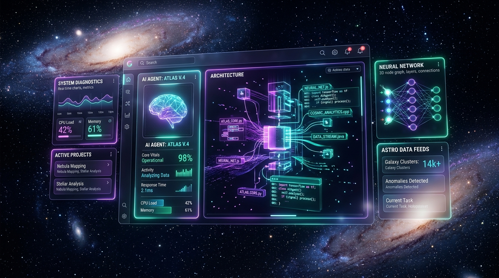

GOOGLE CLOUD / AI GATEWAY
Enterprise AI Gateways (Prudential & GPN)
Designed core Apigee architectures establishing secure, multi-tenant perimeters for enterprise LLM traffic. Engineered standalone Model Context Protocol (MCP) servers and specialized proxies with Model Armor injection protection and SDP PII redaction.
Apigee Gateway
Model Armor
MCP Servers
SDP PII Redaction